- កំណត់និយមន័យអនុគមន៍ជាប់ត្រង់ចំណុចមួយ និងជាប់លើចន្លោះមួយ
- បង្ហាញលក្ខណៈនៃអនុគមន៍ជាប់
- អនុវត្តទ្រឹស្ដីបទតម្លៃកណ្ដាលក្នុងការរកឫសនៃសមីការ ។
1. សញ្ញាណនៃអនុគមន៍ជាប់
កាលណាគេគូសក្រាបនៃអនុគមន៍ \(\displaystyle y = f(x)\) លើចន្លោះ \(\displaystyle I\) មួយនៃដែនកំណត់ ដោយមិនលើកខ្មៅដៃ នោះគេបានគំនូសមួយដែលជាខ្សែ ដូចរូបខាងក្រោម ។ គេថាអនុគមន៍ \(\displaystyle f\) ជាប់ត្រង់គ្រប់ចំណុចនៃចន្លោះ \(\displaystyle I\) ។
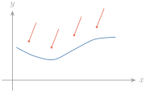
2. ភាពជាប់ត្រង់មួយចំណុច
ឧទាហរណ៍ : គេមានអនុគមន៍ \(\displaystyle y = f(x) = \begin{cases} x^2 + 7 & \text{បើ } x \ge 0 \\ x + 7 & \text{បើ } x < 0 \end{cases}\) ។
គេបាន \(\displaystyle f(0) = 0^2 + 7 = 7\)
- \(\displaystyle \displaystyle\lim_{x \to 0^+} f(x) = \lim_{x \to 0^+}(x^2 + 7) = 0^2 + 7 = 7\)
- \(\displaystyle \displaystyle\lim_{x \to 0^-} f(x) = \lim_{x \to 0^-}(x + 7) = 0 + 7 = 7\)
ដោយ \(\displaystyle \displaystyle\lim_{x \to 0^+} f(x) = \lim_{x \to 0^-} f(x) = 7 = f(0)\) ។ ដូច្នេះ \(\displaystyle \displaystyle\lim_{x \to 0} f(x) = 7 = f(0)\) ។ គេថា \(\displaystyle f\) ជាអនុគមន៍ជាប់ត្រង់ \(\displaystyle x = 0\) ។
និយមន័យ អនុគមន៍ \(\displaystyle y = f(x)\) ជាប់ត្រង់ចំណុច \(\displaystyle x = c\) កាលណា \(\displaystyle f\) បំពេញលក្ខខណ្ឌទាំងបីដូចខាងក្រោម ៖
- \(\displaystyle f\) កំណត់ត្រង់ \(\displaystyle x = c\)
- \(\displaystyle f\) មានលីមីតកាលណា \(\displaystyle x \to c\)
- \(\displaystyle \displaystyle\lim_{x \to c} f(x) = f(c)\) ។
បើអនុគមន៍ \(\displaystyle y = f(x)\) មិនជាប់ត្រង់ចំណុច \(\displaystyle x = c\) គេថា \(\displaystyle f\) ជាអនុគមន៍ដាច់ត្រង់ \(\displaystyle x = c\) ។ អនុគមន៍ \(\displaystyle f\) ដាច់ត្រង់ចំណុច \(\displaystyle x = c\) បើ \(\displaystyle f\) មិនបំពេញលក្ខខណ្ឌណាមួយក្នុងចំណោមលក្ខខណ្ឌទាំងបីខាងលើ ។
ក. អនុគមន៍ \(\displaystyle f\) កំណត់ដោយ \(\displaystyle f(x) = x^2 - 4\) ។ តើ \(\displaystyle f\) ជាអនុគមន៍ជាប់ត្រង់ \(\displaystyle x = 2\) ឬទេ ?
ខ. អនុគមន៍ \(\displaystyle g\) កំណត់ដោយ \(\displaystyle g(x) = \begin{cases} -1 & \text{បើ } x < 0 \\ 1 & \text{បើ } x > 0 \end{cases}\) ។ តើ \(\displaystyle g\) ជាអនុគមន៍ជាប់ត្រង់ \(\displaystyle x = 0\) ឬទេ ?
ក. ត្រង់ \(\displaystyle x = 2\) នាំឱ្យ \(\displaystyle f(2) = 2^2 - 4 = 0\) ហើយ \(\displaystyle \displaystyle\lim_{x \to 2} f(x) = \lim_{x \to 2}(x^2 - 4) = 0\) ។ គេបាន \(\displaystyle \displaystyle\lim_{x \to 2} f(x) = 0 = f(2)\) ។ ដូច្នេះ អនុគមន៍ \(\displaystyle f\) ជាប់ត្រង់ \(\displaystyle x = 2\) ។
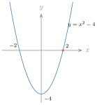
ខ. \(\displaystyle \displaystyle\lim_{x \to 0^-} g(x) = -1\) និង \(\displaystyle \displaystyle\lim_{x \to 0^+} g(x) = 1\) ។ លីមីតខាងឆ្វេងមិនស្មើលីមីតខាងស្ដាំ ដូច្នេះ \(\displaystyle g\) គ្មានលីមីតត្រង់ \(\displaystyle x = 0\) ទេ (ម្យ៉ាងទៀត \(\displaystyle g\) មិនកំណត់ត្រង់ \(\displaystyle x = 0\)) ។ ដូច្នេះ អនុគមន៍ \(\displaystyle g\) ដាច់ត្រង់ \(\displaystyle x = 0\) ។
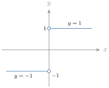
គេមានអនុគមន៍ \(\displaystyle f(x) = \begin{cases} \dfrac{x^2 - 4}{x - 2} & \text{បើ } x \ne 2 \\ 4 & \text{បើ } x = 2 \end{cases}\) ។ បង្ហាញថា \(\displaystyle f\) ជាអនុគមន៍ជាប់ត្រង់ \(\displaystyle x = 2\) ។
\(\displaystyle f\) កំណត់ត្រង់ \(\displaystyle x = 2\) ហើយ \(\displaystyle f(2) = 4\) ។ \(\displaystyle \displaystyle\lim_{x \to 2} f(x) = \lim_{x \to 2}\dfrac{x^2 - 4}{x - 2} = \lim_{x \to 2}(x + 2) = 4 = f(2)\) ។ ដូច្នេះ \(\displaystyle f\) ជាអនុគមន៍ជាប់ត្រង់ \(\displaystyle 2\) ។
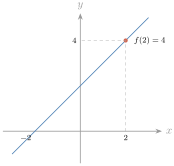
ក. សង់ក្រាបនៃ \(\displaystyle f(x) = \begin{cases} 3 + x & \text{បើ } x \le 1 \\ 3 - x & \text{បើ } x > 1 \end{cases}\) ។ សិក្សាភាពជាប់នៃ \(\displaystyle f\) នៅត្រង់ \(\displaystyle x = 1\) ។
ខ. សង់ក្រាបនៃ \(\displaystyle g(x) = \begin{cases} \sin x & \text{បើ } x \ge 0 \\ \frac12x^2 + x & \text{បើ } x < 0 \end{cases}\) ។ តើ \(\displaystyle g\) ជាប់នៅត្រង់ \(\displaystyle x = 0\) ឬទេ ?
មើលចម្លើយ
ក. \(\displaystyle f(1) = 4\), \(\displaystyle \displaystyle\lim_{x \to 1^-} f(x) = 4\) ប៉ុន្តែ \(\displaystyle \displaystyle\lim_{x \to 1^+} f(x) = 2\) ដូច្នេះលីមីតមិនមាន ហើយ \(\displaystyle f\) មិនជាប់ត្រង់ \(\displaystyle x = 1\) ។
ខ. \(\displaystyle g(0) = \sin0 = 0\), \(\displaystyle \displaystyle\lim_{x \to 0^+}\sin x = 0\), \(\displaystyle \displaystyle\lim_{x \to 0^-}\left(\frac12x^2 + x\right) = 0\) ដូច្នេះ \(\displaystyle g\) ជាប់ត្រង់ \(\displaystyle x = 0\) ។
3. លក្ខណៈនៃអនុគមន៍ជាប់
ផ្អែកតាមលក្ខណៈនៃលីមីតនិងនិយមន័យភាពជាប់ គេបានលក្ខណៈនៃអនុគមន៍ជាប់ដូចខាងក្រោម ៖
បើអនុគមន៍ \(\displaystyle f\) និង \(\displaystyle g\) ជាប់ត្រង់ \(\displaystyle x = c\) នោះគេបាន ៖
- \(\displaystyle f(x) + g(x)\) ជាអនុគមន៍ជាប់ត្រង់ \(\displaystyle x = c\)
- \(\displaystyle f(x) - g(x)\) ជាអនុគមន៍ជាប់ត្រង់ \(\displaystyle x = c\)
- \(\displaystyle f(x) \cdot g(x)\) ជាអនុគមន៍ជាប់ត្រង់ \(\displaystyle x = c\)
- \(\displaystyle kf(x)\) ជាអនុគមន៍ជាប់ត្រង់ \(\displaystyle x = c\) (ដែល \(\displaystyle k\) ជាចំនួនថេរ)
- \(\displaystyle \dfrac{f(x)}{g(x)}\) ជាប់ត្រង់ \(\displaystyle x = c\) ដែល \(\displaystyle g(c) \ne 0\) ។
ដោយប្រើលក្ខណៈនៃលីមីតនិងលក្ខណៈនៃអនុគមន៍ជាប់ គេបាន
- អនុគមន៍លីនេអ៊ែរ ជាអនុគមន៍ជាប់ចំពោះគ្រប់ចំនួនពិត ។
- អនុគមន៍ពហុធា \(\displaystyle P\) ដែលមានដឺក្រេ \(\displaystyle n\) : \(\displaystyle P(x) = a_0x^n + a_1x^{n - 1} + a_2x^{n - 2} + \dots + a_n\) ដែល \(\displaystyle a_1, a_2, \dots, a_n\) ជាចំនួនថេរ និង \(\displaystyle a_0 \ne 0\) ជាអនុគមន៍ជាប់គ្រប់តម្លៃ \(\displaystyle x\) ។ ពិតមែន ព្រោះតាមទ្រឹស្ដីបទនៃលីមីតពហុធាបង្ហាញថា បើ \(\displaystyle c\) ជាចំនួនពិត គេបាន \(\displaystyle \displaystyle\lim_{x \to c} P(x) = a_0c^n + a_1c^{n - 1} + a_2c^{n - 2} + \dots + a_n = P(c)\) ដូច្នេះ \(\displaystyle \displaystyle\lim_{x \to c} P(x) = P(c)\) នាំឱ្យអនុគមន៍ពហុធាជាអនុគមន៍ជាប់គ្រប់តម្លៃ \(\displaystyle x\) ។
- អនុគមន៍សនិទាន \(\displaystyle R(x) = \dfrac{P(x)}{q(x)}\) ; \(\displaystyle q(x) \ne 0\) ដោយ \(\displaystyle p\) និង \(\displaystyle q\) ជាអនុគមន៍ពហុធាជាប់ត្រង់ \(\displaystyle c\) ដូច្នេះ \(\displaystyle \displaystyle\lim_{x \to c} P(x) = P(c)\) និង \(\displaystyle \displaystyle\lim_{x \to c} q(x) = q(c)\) គេបាន \(\displaystyle \displaystyle\lim_{x \to c} R(x) = \dfrac{P(c)}{q(c)}\) ។ ដូច្នេះ អនុគមន៍សនិទានជាប់គ្រប់តម្លៃ \(\displaystyle x\) ដែល \(\displaystyle q(x) \ne 0\) ។
- អនុគមន៍រ៉ាឌីកាល់ \(\displaystyle f(x) = \sqrt[n]{x}\) ជាអនុគមន៍ជាប់ត្រង់តម្លៃ \(\displaystyle x\) ក្នុងដែនកំណត់ \(\displaystyle x\) ។
- អនុគមន៍ត្រីកោណមាត្រ \(\displaystyle y = \sin x\), \(\displaystyle y = \cos x\) ជាអនុគមន៍ជាប់ចំពោះគ្រប់ចំនួនពិត ។
- អនុគមន៍ \(\displaystyle y = \tan x\) ជាអនុគមន៍ជាប់ចំពោះគ្រប់ \(\displaystyle x \in \mathbb{R}\) និង \(\displaystyle x \ne (2k + 1)\dfrac\pi2\), \(\displaystyle k \in \mathbb{Z}\) ។
- អនុគមន៍ \(\displaystyle y = \cot x\) ជាអនុគមន៍ជាប់ចំពោះគ្រប់ \(\displaystyle x \in \mathbb{R}\) និង \(\displaystyle x \ne k\pi\), \(\displaystyle k \in \mathbb{Z}\) ។
រកតម្លៃនៃ \(\displaystyle x\) ដែលនាំឱ្យអនុគមន៍ខាងក្រោម ជាអនុគមន៍ជាប់ ៖ ក. \(\displaystyle f(x) = x^{14} + 20x^4\) ខ. \(\displaystyle g(x) = (7x^2 + 8)(3 - x)\) គ. \(\displaystyle h(x) = \dfrac{x + 3}{x^2 - 3x - 10}\) ។
ក. ដោយ \(\displaystyle x^{14}\) និង \(\displaystyle 20x^4\) ជាប់គ្រប់តម្លៃ \(\displaystyle x\) នោះតាមលក្ខណៈ \(\displaystyle 1\) គេបាន \(\displaystyle f(x) = x^{14} + 20x^4\) ជាប់គ្រប់តម្លៃ \(\displaystyle x\) ។
ខ. ដោយ \(\displaystyle (7x^2 + 8)\) និង \(\displaystyle (3 - x)\) ជាអនុគមន៍ពហុធាជាប់គ្រប់តម្លៃ \(\displaystyle x\) នោះតាមលក្ខណៈ \(\displaystyle 3\) គេបាន \(\displaystyle g(x) = (7x^2 + 8)(3 - x)\) ជាប់គ្រប់តម្លៃ \(\displaystyle x\) ។
គ. គេបាន \(\displaystyle h(x) = \dfrac{x + 3}{x^2 - 3x - 10} = \dfrac{x + 3}{(x - 5)(x + 2)}\) ជាអនុគមន៍សនិទាន ។ តាមលក្ខណៈ \(\displaystyle 5\) ដោយ \(\displaystyle y = x + 3\) និង \(\displaystyle y = (x - 5)(x + 2)\) ជាប់គ្រប់តម្លៃ \(\displaystyle x\) ហើយ \(\displaystyle (x - 5)(x + 2) = 0\) សមមូល \(\displaystyle x = 5\) ឬ \(\displaystyle x = -2\) ។ អនុគមន៍ \(\displaystyle h\) ជាប់គ្រប់តម្លៃ \(\displaystyle x\) លើកលែងតែ \(\displaystyle x = 5\) និង \(\displaystyle x = -2\) ។
បង្ហាញថា \(\displaystyle y = f(x) = \begin{cases} \dfrac{\sin x}{x} & \text{បើ } x \ne 0 \\ 1 & \text{បើ } x = 0 \end{cases}\) ជាអនុគមន៍ជាប់ចំពោះគ្រប់ចំនួនពិត ។
ដោយ \(\displaystyle y = \sin x\) និង \(\displaystyle y = x\) ជាអនុគមន៍ជាប់ចំពោះគ្រប់ \(\displaystyle x \in \mathbb{R}\) នោះគេបាន \(\displaystyle y = \dfrac{\sin x}{x}\) ជាអនុគមន៍ជាប់ចំពោះ \(\displaystyle x \ne 0\) ។ គេមាន \(\displaystyle f(0) = 1\) និង \(\displaystyle \displaystyle\lim_{x \to 0} f(x) = \lim_{x \to 0}\dfrac{\sin x}{x} = 1 = f(0)\) ។ ដូច្នេះ អនុគមន៍ \(\displaystyle f\) ជាប់ត្រង់ \(\displaystyle x = 0\) នាំឱ្យអនុគមន៍ \(\displaystyle f\) ជាប់ចំពោះគ្រប់ចំនួនពិត ។
រកតម្លៃ \(\displaystyle a\) ដែលធ្វើឱ្យអនុគមន៍ \(\displaystyle f(x) = \begin{cases} 3x - a & \text{បើ } x \le 1 \\ \dfrac{x^2 - 3x + 2}{x - 1} & \text{បើ } x > 1 \end{cases}\) ជាប់ត្រង់ \(\displaystyle x = 1\) ។
បើ \(\displaystyle f(x)\) ជាអនុគមន៍ជាប់ត្រង់ \(\displaystyle x = 1\) នោះ \(\displaystyle \displaystyle\lim_{x \to 1^+} f(x) = \lim_{x \to 1^-} f(x)\) ។ គេបាន \(\displaystyle \displaystyle\lim_{x \to 1^-}(3x - a) = 3(1) - a = 3 - a\) ។ ដូច្នេះ \(\displaystyle 3 - a = \displaystyle\lim_{x \to 1^+}\dfrac{x^2 - 3x + 2}{x - 1} = \lim_{x \to 1^+}\dfrac{(x - 2)(x - 1)}{x - 1} = \lim_{x \to 1^+}(x - 2) = 1 - 2 = -1\) ។ \(\displaystyle 3 - a = -1\) នាំឱ្យ \(\displaystyle a = 4\) ។ (ផ្ទៀងផ្ទាត់ ៖ \(\displaystyle f(1) = 3 - 4 = -1\) ស្មើលីមីតទាំងពីរ ។)
បង្ហាញថាអនុគមន៍ខាងក្រោម ជាអនុគមន៍ជាប់ចំពោះគ្រប់ \(\displaystyle x\) នៃដែនកំណត់របស់វា ។ ក. \(\displaystyle f(x) = x^4\left(x + \dfrac13\right)^2\) ខ. \(\displaystyle g(x) = \dfrac{x^2 - 3x + 1}{x^2 - 4x + 3}\) ។
មើលចម្លើយ
ក. \(\displaystyle f\) ជាផលគុណនៃពហុធា ដូច្នេះជាពហុធា ហើយជាប់គ្រប់ \(\displaystyle x \in \mathbb{R}\) ។
ខ. \(\displaystyle g\) ជាអនុគមន៍សនិទាន ដែលភាគបែង \(\displaystyle x^2 - 4x + 3 = (x - 1)(x - 3)\) ដូច្នេះ \(\displaystyle g\) ជាប់គ្រប់ \(\displaystyle x \ne 1\) និង \(\displaystyle x \ne 3\) គឺជាប់ចំពោះគ្រប់ \(\displaystyle x\) នៃដែនកំណត់របស់វា ។
កំណត់តម្លៃ \(\displaystyle a\) ដែលនាំឱ្យអនុគមន៍ខាងក្រោមជាប់ត្រង់ \(\displaystyle x = 0\) ៖ \(\displaystyle f(x) = \begin{cases} -x + a & \text{បើ } x < 0 \\ x^2 - 1 & \text{បើ } x \ge 0 \end{cases}\) ។
មើលចម្លើយ
\(\displaystyle f(0) = -1\), \(\displaystyle \displaystyle\lim_{x \to 0^+} f(x) = -1\) និង \(\displaystyle \displaystyle\lim_{x \to 0^-} f(x) = a\) ។ ត្រូវការ \(\displaystyle a = -1\) ។
4. ភាពជាប់លើចន្លោះ
ឧទាហរណ៍ 1 : គេមានអនុគមន៍ \(\displaystyle f(x) = \dfrac{2}{x + 5}\) ។ អនុគមន៍ \(\displaystyle f\) កំណត់កាលណា \(\displaystyle x \ne -5\) ។ ដែនកំណត់នៃអនុគមន៍ \(\displaystyle f\) គឺ \(\displaystyle D = (-\infty, -5) \cup (-5, +\infty)\) ។ \(\displaystyle f\) ជាអនុគមន៍សនិទាន \(\displaystyle f\) ជាប់គ្រប់តម្លៃ \(\displaystyle x \in (-\infty, -5)\) និងគ្រប់ \(\displaystyle x \in (-5, +\infty)\) ។ គេថាអនុគមន៍ \(\displaystyle f\) ជាប់លើចន្លោះបើក \(\displaystyle (-\infty, -5)\) និងជាប់លើចន្លោះបើក \(\displaystyle (-5, +\infty)\) ។
ឧទាហរណ៍ 2 : សិក្សាភាពជាប់នៃអនុគមន៍ \(\displaystyle g(x) = \begin{cases} 5 - x & \text{បើ } -1 \le x \le 2 \\ x^2 - 1 & \text{បើ } 2 < x \le 3 \end{cases}\) ។
គេមាន \(\displaystyle 5 - x\) និង \(\displaystyle x^2 - 1\) ជាអនុគមន៍ពហុធា ។ តាមលក្ខណៈខាងលើ \(\displaystyle y = 5 - x\) ជាប់គ្រប់ \(\displaystyle x \in (-1, 2)\) ហើយ \(\displaystyle y = x^2 - 1\) ជាប់គ្រប់ \(\displaystyle x \in (2, 3)\) ។ \(\displaystyle \displaystyle\lim_{x \to 2^-} g(x) = \lim_{x \to 2^-}(5 - x) = 3\) និង \(\displaystyle \displaystyle\lim_{x \to 2^+} g(x) = \lim_{x \to 2^+}(x^2 - 1) = 3\) ។ លីមីតទាំងពីរស្មើគ្នា ហើយ \(\displaystyle \displaystyle\lim_{x \to 2} g(x) = g(2) = 3\) ។ ដូច្នេះ \(\displaystyle g\) ជាអនុគមន៍ជាប់ត្រង់ \(\displaystyle x = 2\) ។
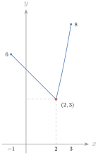
គេថា \(\displaystyle g\) ជាប់លើចន្លោះបើក \(\displaystyle (-1, 3)\) ហើយមាន \(\displaystyle \displaystyle\lim_{x \to -1^+} g(x) = \lim_{x \to -1^+}(5 - x) = g(-1) = 6\) និង \(\displaystyle \displaystyle\lim_{x \to 3^-} g(x) = \lim_{x \to 3^-}(x^2 - 1) = g(3) = 8\) ។ គេថា \(\displaystyle g\) ជាប់លើចន្លោះបិទ \(\displaystyle [-1, 3]\) ។
និយមន័យ
- អនុគមន៍ \(\displaystyle f\) ជាប់លើចន្លោះបើក \(\displaystyle (a, b)\) លុះត្រាតែ \(\displaystyle f\) ជាប់ចំពោះគ្រប់តម្លៃ \(\displaystyle x\) នៃចន្លោះបើកនោះ ។
- អនុគមន៍ \(\displaystyle f\) ជាប់លើចន្លោះបិទ \(\displaystyle [a, b]\) លុះត្រាតែ \(\displaystyle f\) ជាប់លើចន្លោះបើក \(\displaystyle (a, b)\) និងមានលីមីត \(\displaystyle \displaystyle\lim_{x \to a^+} f(x) = f(a)\) និង \(\displaystyle \displaystyle\lim_{x \to b^-} f(x) = f(b)\) ។ (អនុគមន៍ \(\displaystyle f\) ជាប់ត្រង់ \(\displaystyle a\) ខាងស្ដាំ ជាប់ត្រង់ \(\displaystyle b\) ខាងឆ្វេង)
សិក្សាភាពជាប់នៃអនុគមន៍ \(\displaystyle f(x) = \dfrac{x + 2}{x - 3}\) លើចន្លោះ \(\displaystyle (-2, 3)\) និង \(\displaystyle [-2, 3]\) ។
គេបានអនុគមន៍ \(\displaystyle f(x) = \dfrac{x + 2}{x - 3}\) ជាអនុគមន៍សនិទាន នាំឱ្យ \(\displaystyle f(x)\) ជាប់គ្រប់តម្លៃ \(\displaystyle x\) លើកលែងតែ \(\displaystyle x = 3\) ។ ដូច្នេះ គេថាអនុគមន៍ \(\displaystyle f\) ជាប់លើចន្លោះបើក \(\displaystyle (-2, 3)\) ប៉ុន្តែមិនជាប់លើចន្លោះបិទ \(\displaystyle [-2, 3]\) ទេ ព្រោះអនុគមន៍មិនកំណត់ត្រង់ \(\displaystyle x = 3\) ។
សង់ក្រាបអនុគមន៍ទាំងបីខាងក្រោម រួចបញ្ជាក់ភាពជាប់លើចន្លោះដែលឱ្យ ។ ក. \(\displaystyle f(x) = \dfrac1x\), \(\displaystyle (0, 1)\) ខ. \(\displaystyle f(x) = \dfrac{x^2 - 1}{x - 1}\), \(\displaystyle (0, 2)\) គ. \(\displaystyle f(x) = \sin x\), \(\displaystyle [0, 2\pi]\) ។
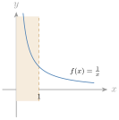
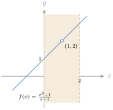
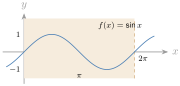
ក. ដោយ \(\displaystyle f\) ជាអនុគមន៍សនិទាន មានភាគបែងខុសពី \(\displaystyle 0\) ក្នុងចន្លោះបើក \(\displaystyle (0, 1)\) ដូច្នេះ អនុគមន៍ \(\displaystyle f\) ជាប់លើចន្លោះ \(\displaystyle (0, 1)\) ។
ខ. ដោយ \(\displaystyle f\) មិនកំណត់ត្រង់ \(\displaystyle x = 1\) នោះអនុគមន៍ \(\displaystyle f\) មិនជាប់ត្រង់ \(\displaystyle x = 1\) ។ ដូច្នេះ អនុគមន៍មិនជាប់ចំពោះគ្រប់តម្លៃ \(\displaystyle x\) ក្នុងចន្លោះ \(\displaystyle (0, 2)\) ។
គ. ដោយអនុគមន៍ \(\displaystyle y = \sin x\) កំណត់ចំពោះគ្រប់ចំនួនពិតនោះ តាមលក្ខណៈនៃភាពជាប់គេថាអនុគមន៍ \(\displaystyle f\) ជាប់លើចន្លោះ \(\displaystyle (0, 2\pi)\) ហើយក៏ជាប់លើចន្លោះបិទ \(\displaystyle [0, 2\pi]\) ។
គេមានអនុគមន៍ \(\displaystyle f\) កំណត់ដោយ \(\displaystyle f(x) = \sqrt{\dfrac{2 - x}{3 + x}}\) ។ តើ \(\displaystyle f\) ជាអនុគមន៍ជាប់លើចន្លោះ \(\displaystyle (-3, 2)\), \(\displaystyle (-3, 2]\) ឬទេ ?
មើលចម្លើយ
\(\displaystyle f\) ជាអនុគមន៍ជាប់លើចន្លោះ \(\displaystyle (-3, 2)\) និង \(\displaystyle (-3, 2]\) ។ (ដែនកំណត់ \(\displaystyle \dfrac{2 - x}{3 + x} \ge 0\) គឺ \(\displaystyle -3 < x \le 2\) ; ត្រង់ \(\displaystyle x = 2\) មាន \(\displaystyle f(2) = 0 = \displaystyle\lim_{x \to 2^-} f(x)\) ។)
5. ភាពជាប់នៃអនុគមន៍បណ្ដាក់
ឧទាហរណ៍ : គេមាន \(\displaystyle h(x) = \cos\left(x + \dfrac\pi3\right)\) ។ តាង \(\displaystyle f(x) = \cos x\) និង \(\displaystyle g(x) = x + \dfrac\pi3\) ។ \(\displaystyle g\) ជាអនុគមន៍ជាប់ត្រង់ \(\displaystyle x = 0\) ។ \(\displaystyle f\) ជាអនុគមន៍ជាប់ត្រង់ \(\displaystyle g(0) = \dfrac\pi3\) ។ ដូច្នេះ \(\displaystyle h = f \circ g\) ជាប់ត្រង់ \(\displaystyle x = 0\) ។
បើអនុគមន៍ \(\displaystyle g\) ជាប់ត្រង់ \(\displaystyle x = c\) និងអនុគមន៍ \(\displaystyle f\) ជាប់ត្រង់ \(\displaystyle g(c)\) នោះអនុគមន៍បណ្ដាក់ \(\displaystyle (f \circ g)(x) = f[g(x)]\) ជាប់ត្រង់ \(\displaystyle c\) ។
សិក្សាភាពជាប់នៃអនុគមន៍ \(\displaystyle h(x) = \left|\dfrac{x\sin x}{x^2 + 2}\right|\) ត្រង់ \(\displaystyle x = 0\) ។
តាង \(\displaystyle f(x) = \dfrac{x\sin x}{x^2 + 2}\) ជាអនុគមន៍សនិទានជាប់ត្រង់ \(\displaystyle x = 0\) ហើយ \(\displaystyle f(0) = 0\) ។ អនុគមន៍ \(\displaystyle g(x) = |x|\) ជាប់ត្រង់ \(\displaystyle f(0) = 0\) ។ នាំឱ្យ \(\displaystyle h = g \circ f\) ពោលគឺ \(\displaystyle h(x) = g[f(x)] = |f(x)|\) ជាអនុគមន៍ជាប់ត្រង់ \(\displaystyle x = 0\) ។
គេមាន \(\displaystyle f(x) = \sqrt{\dfrac{x + 4}{x - 4}}\) ។ តើអនុគមន៍ \(\displaystyle f\) ជាប់នៅលើចន្លោះណាខ្លះ ?
តាង \(\displaystyle g(x) = \sqrt{x}\) មានន័យចំពោះ \(\displaystyle x \ge 0\) និង \(\displaystyle h(x) = \dfrac{x + 4}{x - 4}\) ជាប់លើចន្លោះ \(\displaystyle (-\infty, -4) \cup (4, +\infty)\) ។ បើ \(\displaystyle g(x) = \sqrt x\) ជាប់ចំពោះគ្រប់ \(\displaystyle x \ge 0\) នោះនាំឱ្យ \(\displaystyle f(x)\) ជាប់ចំពោះ \(\displaystyle x \in (-\infty, -4) \cup (4, +\infty)\) ។ ម្យ៉ាងទៀត \(\displaystyle \displaystyle\lim_{x \to -4^-}\sqrt{\dfrac{x + 4}{x - 4}} = 0 = f(-4)\) នាំឱ្យអនុគមន៍ \(\displaystyle f\) ជាប់នៅលើចន្លោះ \(\displaystyle x \in (-\infty, -4] \cup (4, +\infty)\) ។
កំណត់តម្លៃ \(\displaystyle x\) ដែលធ្វើឱ្យអនុគមន៍ខាងក្រោមជាអនុគមន៍ជាប់ ៖ ក. \(\displaystyle f(x) = \sqrt{1 - x^2}\) ខ. \(\displaystyle g(x) = |x^2 - 1|\) គ. \(\displaystyle f(x) = \sqrt{\dfrac{2x}{x - 2}}\) ។
មើលចម្លើយ
ក. \(\displaystyle -1 \le x \le 1\) ។ ខ. \(\displaystyle x \in \mathbb{R}\) ។ គ. \(\displaystyle x \in (-\infty, 0] \cup (2, +\infty)\) ។
6. អនុវត្តន៍ : អនុគមន៍បន្ថាយតាមភាពជាប់
ឧទាហរណ៍ 1 : គេមានអនុគមន៍ \(\displaystyle f\) កំណត់ដោយ \(\displaystyle f(x) = \dfrac{x^2 - 1}{x - 1}\) ។ តើ \(\displaystyle f\) ជាអនុគមន៍ជាប់ត្រង់ \(\displaystyle x = 1\) ឬទេ ?
គេសង្កេតឃើញថា \(\displaystyle \displaystyle\lim_{x \to 1} f(x) = \lim_{x \to 1}\dfrac{x^2 - 1}{x - 1} = \lim_{x \to 1}\dfrac{(x + 1)(x - 1)}{x - 1} = \lim_{x \to 1}(x + 1) = 2\) ប៉ុន្តែ \(\displaystyle f\) មិនកំណត់ត្រង់ \(\displaystyle x = 1\) ទេ នាំឱ្យអនុគមន៍ \(\displaystyle f\) មិនជាប់ត្រង់ \(\displaystyle x = 1\) ទេ ។ ដូច្នេះ បើគេយក \(\displaystyle g\) ជាអនុគមន៍កំណត់ដោយ \(\displaystyle g(x) = \begin{cases} \dfrac{x^2 - 1}{x - 1} & \text{បើ } x \ne 1 \\ 2 & \text{បើ } x = 1 \end{cases}\) ។ គេថា \(\displaystyle g\) ជាបន្ថាយនៃអនុគមន៍ \(\displaystyle f\) តាមភាពជាប់ត្រង់ \(\displaystyle 1\) ។
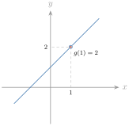
ឧទាហរណ៍ 2 : គេមានអនុគមន៍ \(\displaystyle f(x) = \dfrac{1 - \cos x}{x^2}\) ។ តើ \(\displaystyle f\) អាចមានអនុគមន៍បន្ថាយតាមភាពជាប់ត្រង់ \(\displaystyle 0\) ឬទេ ?
អនុគមន៍ \(\displaystyle f\) មានន័យកាលណា \(\displaystyle x^2 \ne 0 \Leftrightarrow x \ne 0\) ។ ដែនកំណត់នៃ \(\displaystyle f\) គឺ \(\displaystyle D = \mathbb{R} - \{0\}\) ។ គេបាន \(\displaystyle \displaystyle\lim_{x \to 0} f(x) = \lim_{x \to 0}\dfrac{1 - \cos x}{x^2} = \lim_{x \to 0}\dfrac{2\sin^2\frac x2}{x^2} = \dfrac24\lim_{x \to 0}\left(\dfrac{\sin\frac x2}{\frac x2}\right)^2 = \dfrac12\) ។ បើគេយក \(\displaystyle g\) ជាអនុគមន៍កំណត់ដោយ \(\displaystyle g(x) = \begin{cases} \dfrac{1 - \cos x}{x^2} & \text{បើ } x \ne 0 \\ \dfrac12 & \text{បើ } x = 0 \end{cases}\) នោះ \(\displaystyle g\) ជាប់ត្រង់ \(\displaystyle x = 0\) ។ គេថា \(\displaystyle g\) ជាបន្ថាយនៃអនុគមន៍ \(\displaystyle f\) តាមភាពជាប់ត្រង់ \(\displaystyle 0\) ។
បើ \(\displaystyle f\) ជាអនុគមន៍មិនកំណត់ត្រង់ \(\displaystyle x = a\) និងមានលីមីត \(\displaystyle \displaystyle\lim_{x \to a} f(x) = \ell\) នោះអនុគមន៍បន្ថាយនៃ \(\displaystyle f\) តាមភាពជាប់ត្រង់ \(\displaystyle x = a\) កំណត់ដោយ \(\displaystyle g(x) = \begin{cases} f(x) & \text{បើ } x \ne a \\ \ell & \text{បើ } x = a \end{cases}\) ។
ក. កំណត់អនុគមន៍បន្ថាយភាពជាប់នៃ \(\displaystyle f\) តាមភាពជាប់ត្រង់ \(\displaystyle x = 2\) ដែល \(\displaystyle f(x) = \dfrac{x^2 - 4x + 4}{x - 2}\) ។ ខ. កំណត់អនុគមន៍បន្ថាយភាពជាប់នៃ \(\displaystyle f\) តាមភាពជាប់ត្រង់ \(\displaystyle x = 0\) ដែល \(\displaystyle f(x) = \dfrac{e^{3x} - 1}{x}\) ។
មើលចម្លើយ
ក. \(\displaystyle f(x) = x - 2\) ចំពោះ \(\displaystyle x \ne 2\) ដូច្នេះ \(\displaystyle g(x) = \begin{cases} f(x) & \text{បើ } x \ne 2 \\ 0 & \text{បើ } x = 2 \end{cases}\) ។ ខ. \(\displaystyle \displaystyle\lim_{x \to 0}\dfrac{e^{3x} - 1}{x} = 3\) ដូច្នេះ \(\displaystyle g(x) = \begin{cases} f(x) & \text{បើ } x \ne 0 \\ 3 & \text{បើ } x = 0 \end{cases}\) ។
7. ទ្រឹស្ដីបទតម្លៃកណ្ដាល
ឧទាហរណ៍ 1 : បូផាមានកម្ពស់ \(\displaystyle 1{,}30\ \text{m}\) នៅពេលខួបកំណើតគម្រប់អាយុ \(\displaystyle 13\) ឆ្នាំ និងមានកម្ពស់ \(\displaystyle 1{,}50\ \text{m}\) នៅពេលខួបកំណើតគម្រប់អាយុ \(\displaystyle 14\) ឆ្នាំ ។ ដូច្នេះ ត្រូវមានរយៈពេល \(\displaystyle t\) មួយ \(\displaystyle 13 < t < 14\) ដែលកម្ពស់ស្មើ \(\displaystyle h\) ហើយ \(\displaystyle 1{,}30\ \text{m} < h < 1{,}50\ \text{m}\) ។
ឧទាហរណ៍ 2 : គេមាន \(\displaystyle f(x) = x^2 - 2\) លើចន្លោះ \(\displaystyle [0, 2]\) \(\displaystyle f\) ជាប់និងកើន ។ គេបាន \(\displaystyle f(0) = -2\) និង \(\displaystyle f(2) = 2\) ។ យក \(\displaystyle k\), \(\displaystyle f(0) \le k \le f(2)\) សមីការ \(\displaystyle x^2 - 2 = k\) សរសេរជា \(\displaystyle x^2 = k + 2\) ។ ដោយ \(\displaystyle -2 \le k \le 2\) នោះ \(\displaystyle k + 2 \ge 0\) ។ ដូច្នេះ លើចន្លោះ \(\displaystyle [0, 2]\) គេបាន \(\displaystyle x = \sqrt{k + 2}\) ។ គ្រប់ \(\displaystyle k\) ដែល \(\displaystyle f(0) \le k \le f(2)\) សមីការ \(\displaystyle x^2 - 2 = k\) មានឫសមួយ \(\displaystyle x = c\) មួយដែល \(\displaystyle 0 \le c \le 2\) ។
ទ្រឹស្ដីបទ បើអនុគមន៍ \(\displaystyle f\) ជាប់លើចន្លោះបិទ \(\displaystyle [a, b]\) និង \(\displaystyle k\) ជាចំនួនមួយនៅចន្លោះ \(\displaystyle f(a)\) និង \(\displaystyle f(b)\) នោះមានចំនួនពិត \(\displaystyle c\) មួយយ៉ាងតិចក្នុងចន្លោះ \(\displaystyle (a, b)\) ដែល \(\displaystyle f(c) = k\) ។
វិបាក បើអនុគមន៍ \(\displaystyle f\) ជាប់ ហើយកើនដាច់ខាត ឬក៏ចុះដាច់ខាតលើចន្លោះបិទ \(\displaystyle [a, b]\) នោះចំពោះគ្រប់ចំនួន \(\displaystyle k\) នៅចន្លោះ \(\displaystyle f(a)\) និង \(\displaystyle f(b)\) សមីការ \(\displaystyle f(x) = k\) មានចម្លើយតែមួយគត់ក្នុងចន្លោះ \(\displaystyle (a, b)\) ។
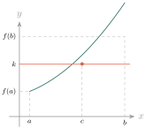
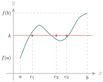
សម្រាយបញ្ជាក់ ៖ អនុគមន៍ \(\displaystyle f\) ជាប់និងកើនដាច់ខាតលើចន្លោះបិទ \(\displaystyle [a, b]\) ។ \(\displaystyle f\) កើនដាច់ខាតមានន័យថា បើ \(\displaystyle x\) និង \(\displaystyle x'\) ជាពីរចំនួននៅក្នុងចន្លោះ \(\displaystyle [a, b]\) ដែល \(\displaystyle x < x'\) នោះ \(\displaystyle f(x) < f(x')\) ។ ឱ្យចំនួន \(\displaystyle k\) នៅចន្លោះ \(\displaystyle f(a)\) និង \(\displaystyle f(b)\), \(\displaystyle f(a) < k < f(b)\) និង \(\displaystyle f\) ជាអនុគមន៍ជាប់តាមទ្រឹស្ដីបទបញ្ជាក់ថាមានចំនួន \(\displaystyle c\) មួយនៅចន្លោះ \(\displaystyle a\) និង \(\displaystyle b\) ដែល \(\displaystyle f(c) = k\) ។ ឧបមាថាមានចំនួនមួយទៀត \(\displaystyle c'\) ខុសពី \(\displaystyle c\) ផ្ទៀងផ្ទាត់ \(\displaystyle f(c') = k\) នោះ \(\displaystyle f(c) = f(c')\) ជាករណីផ្ទុយនឹងសម្មតិកម្មដែលថា \(\displaystyle f\) កើនដាច់ខាត ។ ដូច្នេះមានចំនួន \(\displaystyle c\) មួយគត់ ដែលផ្ទៀងផ្ទាត់ \(\displaystyle f(c) = k\) គឺសមីការ \(\displaystyle f(x) = k\) មានចម្លើយតែមួយគត់ ។
គេឃើញថាចំពោះតម្លៃ \(\displaystyle k\) អាចមានតម្លៃ \(\displaystyle c\) ច្រើនជាងមួយ ។ ទ្រឹស្ដីបទបញ្ជាក់ថាយ៉ាងហោចណាស់មានចំនួន \(\displaystyle c\) មួយ ប៉ុន្តែមិនមែនតែមួយគត់ទេ ។ បង្ហាញថាមានតម្លៃ \(\displaystyle c\) បី \(\displaystyle c_1, c_2, c_3\) ។
គេមានអនុគមន៍ \(\displaystyle f\) កំណត់ដោយ \(\displaystyle f(x) = \begin{cases} x - 1 & \text{បើ } 0 \le x \le 2 \\ x^2 & \text{បើ } 2 < x \le 3 \end{cases}\) ។ តើគ្រប់ \(\displaystyle -1 \le k \le 9\) មាន \(\displaystyle c\) ដែល \(\displaystyle f(c) = k\) ឬទេ ?
តាមក្រាបនៃអនុគមន៍បង្ហាញថា \(\displaystyle f\) ជាអនុគមន៍ដាច់ត្រង់ \(\displaystyle 2\) ដែលស្ថិតក្នុងចន្លោះ \(\displaystyle [0, 3]\) ។ គេបាន \(\displaystyle f(0) = -1\) និង \(\displaystyle f(3) = 9\) ។ បើ \(\displaystyle k\) ជាចំនួនណាមួយនៅចន្លោះ \(\displaystyle 1\) និង \(\displaystyle 4\) នោះគ្មានតម្លៃ \(\displaystyle c\) ដែល \(\displaystyle f(c) = k\) ព្រោះគ្មានតម្លៃអនុគមន៍នៅចន្លោះ \(\displaystyle 1\) និង \(\displaystyle 4\) ។ (ព្រោះ \(\displaystyle f(2) = 1\) និង \(\displaystyle \displaystyle\lim_{x \to 2^+} f(x) = 4\) ។ ត្រង់ \(\displaystyle x = 2\) លោតពី \(\displaystyle 1\) ទៅ \(\displaystyle 4\) ។)
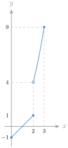
ទ្រឹស្ដីបទតម្លៃកណ្ដាលអាចប្រើបានចំពោះ \(\displaystyle k = 0\) ជាពិសេសបើអនុគមន៍ \(\displaystyle f\) ជាប់លើចន្លោះបិទ \(\displaystyle [a, b]\), \(\displaystyle f(a)\) និង \(\displaystyle f(b)\) មានសញ្ញាផ្ទុយគ្នានោះ \(\displaystyle f(a) \cdot f(b) < 0\) មានចំនួន \(\displaystyle c\) មួយយ៉ាងតិចក្នុងចន្លោះបិទ \(\displaystyle [a, b]\) ដែល \(\displaystyle f(c) = 0\) ។
ដោយប្រើទ្រឹស្ដីបទតម្លៃកណ្ដាល ចូរបង្ហាញថាចំពោះអនុគមន៍ពហុធា \(\displaystyle f(x) = x^3 + 2x - 1\) មានចំនួនពិត \(\displaystyle c\) នៅក្នុងចន្លោះ \(\displaystyle [0, 1]\) ដែល \(\displaystyle f(c) = 0\) ។
ដោយ \(\displaystyle f(0) = 0^3 + 2(0) - 1 = -1\) និង \(\displaystyle f(1) = 1^3 + 2(1) - 1 = 2\) ។ គេបាន \(\displaystyle f(0) \cdot f(1) = (-1)(2) = -2 < 0\) ។ តាមទ្រឹស្ដីបទតម្លៃកណ្ដាលដោយ \(\displaystyle f(0) \cdot f(1) < 0\) មានចំនួន \(\displaystyle c\) មួយយ៉ាងតិចក្នុងចន្លោះបិទ \(\displaystyle [0, 1]\) ដែល \(\displaystyle f(c) = 0\) ។
គេឱ្យអនុគមន៍ \(\displaystyle f\) កំណត់ដោយ \(\displaystyle f(x) = 4 + 3x - x^2\) ដែល \(\displaystyle 2 \le x \le 5\) ។ ប្រើទ្រឹស្ដីបទតម្លៃកណ្ដាលរកតម្លៃ \(\displaystyle c\) បើ \(\displaystyle k = 1\) ។
គេបាន \(\displaystyle f(2) = 6\), \(\displaystyle f(5) = -6\) ។ ដើម្បីរក \(\displaystyle c\) គេមាន \(\displaystyle f(c) = k = 1\) ។ \(\displaystyle 4 + 3c - c^2 = 1\), \(\displaystyle c^2 - 3c - 3 = 0\) គេបាន \(\displaystyle c = \dfrac{3 \pm \sqrt{21}}{2}\), \(\displaystyle c \in [2, 5]\) នោះ \(\displaystyle c = \dfrac{3 + \sqrt{21}}{2}\) ។
ប្រើទ្រឹស្ដីបទតម្លៃកណ្ដាលបង្ហាញថាសមីការ \(\displaystyle x^5 - 3x - 1 = 0\) មានឫសយ៉ាងតិចមួយក្នុងចន្លោះ \(\displaystyle (1, 2)\) ។
មើលចម្លើយ
តាង \(\displaystyle f(x) = x^5 - 3x - 1\) ជាពហុធា ដូច្នេះជាប់លើ \(\displaystyle [1, 2]\) ។ \(\displaystyle f(1) = 1 - 3 - 1 = -3 < 0\) និង \(\displaystyle f(2) = 32 - 6 - 1 = 25 > 0\) ។ តាមទ្រឹស្ដីបទតម្លៃកណ្ដាល មាន \(\displaystyle c \in (1, 2)\) ដែល \(\displaystyle f(c) = 0\) ។
លំហាត់
បញ្ជាក់ថា តើអនុគមន៍ខាងក្រោមជាប់ត្រង់តម្លៃ \(\displaystyle x\) ដែលឱ្យឬទេ ?
- ក. \(\displaystyle f(x) = 5x^2 - 6x + 1\), \(\displaystyle x = 2\)
- ខ. \(\displaystyle f(x) = \dfrac{x + 2}{x - 1}\), \(\displaystyle x = 1\)
- គ. \(\displaystyle f(x) = \dfrac{\sqrt x - 2}{x - 4}\), \(\displaystyle x = 4\)
- ឃ. \(\displaystyle f(x) = \dfrac{|x + 2|}{x + 2}\), \(\displaystyle x = -2\)
- ង. \(\displaystyle f(x) = \begin{cases} x + 1 & \text{បើ } x \le 2 \\ 2 & \text{បើ } x > 2 \end{cases}\), \(\displaystyle x = 2\)
- ច. \(\displaystyle f(x) = \begin{cases} \dfrac{x^2 - 1}{x + 1} & \text{បើ } x < -1 \\ x^2 - 3 & \text{បើ } x \ge -1 \end{cases}\), \(\displaystyle x = -1\) ។
រកតម្លៃ \(\displaystyle x\) ដែលធ្វើឱ្យអនុគមន៍ខាងក្រោមជាអនុគមន៍ជាប់ ។
- ក. \(\displaystyle f(x) = \dfrac{3x - 1}{2x - 6}\)
- ខ. \(\displaystyle f(x) = \dfrac{x}{x^2 + 4x - 5}\)
- គ. \(\displaystyle f(x) = \dfrac{x^2 - 2x + 1}{x^2 - x - 2}\)
- ឃ. \(\displaystyle f(x) = \dfrac{3x - 2}{x^2 - 3x - 18}\)
- ង. \(\displaystyle f(x) = \begin{cases} \dfrac x2 + 1 & \text{បើ } x \le 2 \\ 3 - x & \text{បើ } x > 2 \end{cases}\)
- ច. \(\displaystyle f(x) = \begin{cases} -x + 1 & \text{បើ } x \le -1 \\ 2 & \text{បើ } -1 < x < 1 \\ -x + 3 & \text{បើ } x > 1 \end{cases}\) ។
សិក្សាភាពជាប់នៃអនុគមន៍ខាងក្រោមលើចន្លោះដែលឱ្យ ។
- ក. \(\displaystyle f(x) = \dfrac{x - 4}{4 + x}\) លើចន្លោះ \(\displaystyle (0, 1)\) និង \(\displaystyle [-4, 1]\)
- ខ. \(\displaystyle f(x) = x\left(1 + \dfrac1x\right)\) លើចន្លោះ \(\displaystyle (0, 1)\) និង \(\displaystyle [0, 1]\)
- គ. \(\displaystyle f(x) = \begin{cases} x(x - 1) & \text{បើ } x < 3 \\ \dfrac{x^2 - 9}{x - 3} & \text{បើ } x \ge 3 \end{cases}\) លើចន្លោះ \(\displaystyle (0, 3)\) និង \(\displaystyle [0, 3]\) ។
រកតម្លៃ \(\displaystyle A\) ដែលធ្វើឱ្យអនុគមន៍ \(\displaystyle f(x)\) ជាប់គ្រប់តម្លៃ \(\displaystyle x\)
- ក. \(\displaystyle f(x) = \begin{cases} Ax - 3 & \text{បើ } x \le 3 \\ 3 - x + 2x^2 & \text{បើ } x > 3 \end{cases}\)
- ខ. \(\displaystyle f(x) = \begin{cases} 1 - 3x & \text{បើ } x < 4 \\ Ax^2 + 2x - 3 & \text{បើ } x \ge 4 \end{cases}\) ។
រកតម្លៃ \(\displaystyle A\) និង \(\displaystyle B\) ដែលធ្វើឱ្យអនុគមន៍កំណត់ដោយ
\[f(x) = \begin{cases} Ax^2 + 5x - 9 & \text{បើ } x < 1 \\ B & \text{បើ } x = 1 \\ (3 - x)(A - 2x) & \text{បើ } x > 1 \end{cases}\]ជាប់គ្រប់តម្លៃ \(\displaystyle x\) ។
ក្នុងបណ្ដាអនុគមន៍ខាងក្រោម តើ \(\displaystyle f\) អាចមានបន្ថាយតាមភាពជាប់ត្រង់ \(\displaystyle a\) ឬទេ ?
- ក. \(\displaystyle f(x) = \dfrac{x^2 - 9}{x - 3}\), \(\displaystyle a = 3\)
- ខ. \(\displaystyle f(x) = \dfrac{x^2 + 3x - 10}{x - 2}\), \(\displaystyle a = 2\)
- គ. \(\displaystyle f(x) = \dfrac{x^3 - 1}{x - 1}\), \(\displaystyle a = 1\)
- ឃ. \(\displaystyle f(x) = \dfrac{x^2 - 16}{x^2 - 3x + 4}\), \(\displaystyle a = 4\) ។
ប្រើទ្រឹស្ដីបទតម្លៃកណ្ដាលបង្ហាញថាអនុគមន៍ខាងក្រោមមានចំនួន \(\displaystyle c\) ក្នុងចន្លោះដែលឱ្យ ៖
- ក. \(\displaystyle f(x) = x^2 + x - 1\), \(\displaystyle [0, 5]\), \(\displaystyle f(c) = 11\)
- ខ. \(\displaystyle f(x) = x^2 - 6x + 8\), \(\displaystyle [0, 3]\), \(\displaystyle f(c) = 0\)
- គ. \(\displaystyle f(x) = x^3 - x^2 + x - 2\), \(\displaystyle [0, 3]\), \(\displaystyle f(c) = 4\)
- ឃ. \(\displaystyle f(x) = \dfrac{x^2 + x}{x - 1}\), \(\displaystyle \left[\dfrac52, 4\right]\), \(\displaystyle f(c) = 6\) ។
គេឱ្យអនុគមន៍និងចន្លោះបិទដូចខាងក្រោម ។ ប្រើទ្រឹស្ដីបទតម្លៃកណ្ដាល រកតម្លៃ \(\displaystyle c\) បើគេស្គាល់តម្លៃ \(\displaystyle k\) ។
- ក. \(\displaystyle f(x) = 2 + x - x^2\), \(\displaystyle [0, 3]\), \(\displaystyle k = 1\)
- ខ. \(\displaystyle f(x) = \sqrt{25 - x^2}\), \(\displaystyle [-4{,}5;\ 3]\), \(\displaystyle k = 3\) ។
- ក. ស្រាយបញ្ជាក់ថាសមីការ \(\displaystyle x\tan x = \cos x\) យ៉ាងហោចណាស់មានឫសពិតមួយចន្លោះ \(\displaystyle \left[0, \dfrac\pi4\right]\) ។
ខ. ស្រាយបញ្ជាក់ថា សមីការ \(\displaystyle (x^n - 1)\cos x + \sqrt2\sin x - 1 = 0\) យ៉ាងហោចណាស់មានឫសពិតមួយចន្លោះ \(\displaystyle (0, 1)\) ។
កំណត់សម្គាល់ទៅលើលំហាត់ ៖ (១) លំហាត់ ៦ ឃ. សៀវភៅបោះពុម្ពភាគបែង \(\displaystyle x^2 - 3x + 4\) ដែលមិនសូន្យត្រង់ \(\displaystyle x = 4\) (\(\displaystyle =8\)) ដូច្នេះ \(\displaystyle f\) ជាប់ត្រង់ \(\displaystyle 4\) រួចហើយ គ្មានអ្វីត្រូវបន្ថាយ ។ បើភាគបែងជា \(\displaystyle x^2 - 3x - 4 = (x - 4)(x + 1)\) នោះបន្ថាយបាន ដោយ \(\displaystyle \ell = \dfrac85\) ។ (២) ឧទាហរណ៍ក្នុងចំណុច ២ សៀវភៅបោះពុម្ព \(\displaystyle x \ge 7\) និង \(\displaystyle x < 7\) ប៉ុន្តែការគណនាប្រើតម្លៃ \(\displaystyle x = 0\) ដូច្នេះត្រូវជា \(\displaystyle x \ge 0\) និង \(\displaystyle x < 0\) ។ (៣) លំហាត់គំរូទី ១ នៃភាពជាប់នៃអនុគមន៍បណ្ដាក់ សៀវភៅសរសេរ \(\displaystyle h = f \circ g\) ប៉ុន្តែតាមនិយមន័យ \(\displaystyle h(x) = |f(x)| = g[f(x)]\) គឺ \(\displaystyle h = g \circ f\) ដូចដែលបានកែក្នុងដំណោះស្រាយខាងលើ ។
ចម្លើយលំហាត់
- 1. ក. \(\displaystyle f(2) = 20 - 12 + 1 = 9 = \displaystyle\lim_{x \to 2} f(x)\) ដូច្នេះជាប់ ។
ខ. \(\displaystyle f\) មិនកំណត់ត្រង់ \(\displaystyle x = 1\) (\(\displaystyle \displaystyle\lim_{x \to 1^\pm} f(x) = \pm\infty\)) ដូច្នេះមិនជាប់ ។
គ. \(\displaystyle f\) មិនកំណត់ត្រង់ \(\displaystyle x = 4\) ដូច្នេះមិនជាប់ (តែមានលីមីត \(\displaystyle \dfrac14\) ដូច្នេះបន្ថាយបាន) ។
ឃ. \(\displaystyle f\) មិនកំណត់ត្រង់ \(\displaystyle x = -2\) ហើយ \(\displaystyle \displaystyle\lim_{x \to -2^+} f(x) = 1 \ne -1 = \lim_{x \to -2^-} f(x)\) ដូច្នេះមិនជាប់ ។
ង. \(\displaystyle f(2) = 3\), \(\displaystyle \displaystyle\lim_{x \to 2^-} f(x) = 3\) តែ \(\displaystyle \displaystyle\lim_{x \to 2^+} f(x) = 2\) ដូច្នេះមិនជាប់ ។
ច. \(\displaystyle f(-1) = 1 - 3 = -2\), \(\displaystyle \displaystyle\lim_{x \to -1^+} f(x) = -2\) និង \(\displaystyle \displaystyle\lim_{x \to -1^-}\dfrac{x^2 - 1}{x + 1} = \lim_{x \to -1^-}(x - 1) = -2\) ដូច្នេះ \(\displaystyle f\) ជាប់ត្រង់ \(\displaystyle x = -1\) ។ - 2. ក. \(\displaystyle x \ne 3\) ។ ខ. \(\displaystyle x^2 + 4x - 5 = (x + 5)(x - 1)\) ដូច្នេះ \(\displaystyle x \ne -5\) និង \(\displaystyle x \ne 1\) ។ គ. \(\displaystyle x^2 - x - 2 = (x - 2)(x + 1)\) ដូច្នេះ \(\displaystyle x \ne 2\) និង \(\displaystyle x \ne -1\) ។ ឃ. \(\displaystyle x^2 - 3x - 18 = (x - 6)(x + 3)\) ដូច្នេះ \(\displaystyle x \ne 6\) និង \(\displaystyle x \ne -3\) ។ ង. ត្រង់ \(\displaystyle x = 2\) ៖ \(\displaystyle f(2) = 2\) និង \(\displaystyle \displaystyle\lim_{x \to 2^+}(3 - x) = 1\) ដូច្នេះ \(\displaystyle f\) ជាប់គ្រប់ \(\displaystyle x \ne 2\) ។ ច. ត្រង់ \(\displaystyle x = -1\) ៖ \(\displaystyle f(-1) = -(-1) + 1 = 2\) ; \(\displaystyle \displaystyle\lim_{x \to -1^-} f(x) = 2\) និង \(\displaystyle \displaystyle\lim_{x \to -1^+} f(x) = 2\) ដូច្នេះជាប់ ។ ត្រង់ \(\displaystyle x = 1\) ៖ \(\displaystyle f(1) = 2\) ; \(\displaystyle \displaystyle\lim_{x \to 1^-} f(x) = 2\) និង \(\displaystyle \displaystyle\lim_{x \to 1^+}(-x + 3) = 2\) ដូច្នេះជាប់ ។ គ្រប់ត្រង់ផ្សេងទៀត \(\displaystyle f\) ជាប់ព្រោះជាពហុធា ដូច្នេះ \(\displaystyle f\) ជាប់ចំពោះគ្រប់ \(\displaystyle x \in \mathbb{R}\) ។
- 3. ក. ជាប់លើ \(\displaystyle (0, 1)\) ព្រោះ \(\displaystyle 4 + x \ne 0\) ; លើ \(\displaystyle [-4, 1]\) មិនជាប់ ព្រោះមិនកំណត់ត្រង់ \(\displaystyle x = -4\) ។ ខ. \(\displaystyle f(x) = x + 1\) ចំពោះ \(\displaystyle x \ne 0\) ដូច្នេះជាប់លើ \(\displaystyle (0, 1)\) ; លើ \(\displaystyle [0, 1]\) មិនជាប់ ព្រោះមិនកំណត់ត្រង់ \(\displaystyle 0\) ។ គ. ត្រង់ \(\displaystyle x = 3\) ៖ \(\displaystyle f(3) = 6\) ដោយ \(\displaystyle \dfrac{x^2 - 9}{x - 3} = x + 3\) ; \(\displaystyle \displaystyle\lim_{x \to 3^-} x(x - 1) = 6\) និង \(\displaystyle \displaystyle\lim_{x \to 3^+}(x + 3) = 6\) ដូច្នេះ \(\displaystyle f\) ជាប់ត្រង់ \(\displaystyle 3\) ហើយជាប់លើ \(\displaystyle (0, 3)\) និង \(\displaystyle [0, 3]\) ។
- 4. ក. \(\displaystyle A = 7\) ។ ខ. \(\displaystyle A = -1\) ។ (ក. ត្រូវ \(\displaystyle 3A - 3 = 18\) ; ខ. ត្រូវ \(\displaystyle 1 - 12 = 16A + 8 - 3\)) ។
- 5. ជាប់ត្រង់ \(\displaystyle 1\) ៖ \(\displaystyle A + 5 - 9 = B = (3 - 1)(A - 2)\) នោះ \(\displaystyle A - 4 = 2A - 4\) ដូច្នេះ \(\displaystyle A = 0\) ហើយ \(\displaystyle B = -4\) ។
- 6. ក. បាន (\(\displaystyle \ell = 6\)) ។ ខ. បាន (\(\displaystyle \ell = 7\)) ព្រោះ \(\displaystyle \dfrac{(x + 5)(x - 2)}{x - 2} \to 7\) ។ គ. បាន (\(\displaystyle \ell = 3\)) ។ ឃ. \(\displaystyle f\) កំណត់ និងជាប់ត្រង់ \(\displaystyle a = 4\) រួចហើយ (\(\displaystyle f(4) = 0\)) ។
- 7. ក. \(\displaystyle f(0) = -1\), \(\displaystyle f(5) = 29\) ហើយ \(\displaystyle -1 < 11 < 29\) ។ ខ. \(\displaystyle f(0) = 8\), \(\displaystyle f(3) = -1\) ហើយ \(\displaystyle -1 < 0 < 8\) ។ គ. \(\displaystyle f(0) = -2\), \(\displaystyle f(3) = 19\) ហើយ \(\displaystyle -2 < 4 < 19\) ។ ឃ. \(\displaystyle f\left(\dfrac52\right) = \dfrac{35}{6} \approx 5{,}83\), \(\displaystyle f(4) = \dfrac{20}{3} \approx 6{,}67\) ហើយ \(\displaystyle 5{,}83 < 6 < 6{,}67\) ។ (ក្នុងករណីនីមួយៗ \(\displaystyle f\) ជាអនុគមន៍សនិទាន ឬពហុធាជាប់លើចន្លោះ ដូច្នេះមាន \(\displaystyle c\)) ។
- 8. ក. \(\displaystyle 2 + c - c^2 = 1\) គឺ \(\displaystyle c^2 - c - 1 = 0\) នាំឱ្យ \(\displaystyle c = \dfrac{1 + \sqrt5}{2} \approx 1{,}62 \in [0, 3]\) ។ ខ. \(\displaystyle \sqrt{25 - c^2} = 3\) គឺ \(\displaystyle c^2 = 16\) ហើយ \(\displaystyle c \in [-4{,}5;\ 3]\) ដូច្នេះ \(\displaystyle c = -4\) ។
- 9. ក. តាង \(\displaystyle g(x) = x\tan x - \cos x\) ជាប់លើ \(\displaystyle \left[0, \dfrac\pi4\right]\) ; \(\displaystyle g(0) = -1 < 0\) និង \(\displaystyle g\left(\dfrac\pi4\right) = \dfrac\pi4 - \dfrac{\sqrt2}{2} \approx 0{,}078 > 0\) ដូច្នេះមានឫស ។
ខ. តាង \(\displaystyle g(x) = (x^n - 1)\cos x + \sqrt2\sin x - 1\) ជាប់ ; \(\displaystyle g(0) = -2 < 0\) និង \(\displaystyle g(1) = \sqrt2\sin1 - 1 \approx 0{,}19 > 0\) ដូច្នេះមានឫសក្នុង \(\displaystyle (0, 1)\) ។
សង្ខេបមេរៀននៃជំពូកទី 2
១. លីមីតនៃអនុគមន៍ត្រង់ចំនួនកំណត់
- អនុគមន៍ \(\displaystyle f\) មានលីមីត \(\displaystyle L\) កាលណា \(\displaystyle x\) ខិតជិត \(\displaystyle a\) បើគ្រប់ចំនួន \(\displaystyle \varepsilon > 0\) មានចំនួន \(\displaystyle \delta > 0\) ដែល \(\displaystyle 0 < |x - a| < \delta\) នាំឱ្យ \(\displaystyle |f(x) - L| < \varepsilon\) ។ គេសរសេរ \(\displaystyle \displaystyle\lim_{x \to a} f(x) = L\) ។
- គេថាអនុគមន៍ \(\displaystyle f\) ខិតជិត \(\displaystyle +\infty\) ឬ \(\displaystyle -\infty\) កាលណា \(\displaystyle x\) ខិតជិត \(\displaystyle a\) បើចំពោះគ្រប់ចំនួន \(\displaystyle M > 0\) គេមាន \(\displaystyle \delta > 0\) ដែល \(\displaystyle 0 < |x - a| < \delta\) នាំឱ្យ \(\displaystyle f(x) > M\) ឬ \(\displaystyle f(x) < -M\) ។ គេសរសេរ \(\displaystyle \displaystyle\lim_{x \to a} f(x) = +\infty\) ឬ \(\displaystyle \displaystyle\lim_{x \to a} f(x) = -\infty\) ។
២. លីមីតនៃអនុគមន៍ត្រង់អនន្ត
- \(\displaystyle \displaystyle\lim_{x \to +\infty} f(x) = L\) ឬ \(\displaystyle \displaystyle\lim_{x \to -\infty} f(x) = L\) : ចំពោះគ្រប់ \(\displaystyle \varepsilon > 0\) អាចរក \(\displaystyle N > 0\) ដែល \(\displaystyle x > N\) ឬ \(\displaystyle x < -N\) នាំឱ្យ \(\displaystyle |f(x) - L| < \varepsilon\) ។
- \(\displaystyle \displaystyle\lim_{x \to +\infty} f(x) = +\infty\) : ចំពោះគ្រប់ \(\displaystyle M > 0\) មាន \(\displaystyle N > 0\) ដែល \(\displaystyle x > N\) នាំឱ្យ \(\displaystyle f(x) > M\) ។
- \(\displaystyle \displaystyle\lim_{x \to -\infty} f(x) = +\infty\) : ចំពោះគ្រប់ \(\displaystyle M > 0\) មាន \(\displaystyle N > 0\) ដែល \(\displaystyle x < -N\) នាំឱ្យ \(\displaystyle f(x) > M\) ។
៣. ប្រមាណវិធីលើលីមីត បើ \(\displaystyle \displaystyle\lim_{x \to a} f(x) = L\), \(\displaystyle \displaystyle\lim_{x \to a} g(x) = M\) និង \(\displaystyle \displaystyle\lim_{x \to a} h(x) = N\) ហើយ \(\displaystyle L, M, N\) ជាចំនួនពិត គេបាន \(\displaystyle \displaystyle\lim[f \pm g] = L \pm M\) ; \(\displaystyle \displaystyle\lim[f + g - h] = L + M - N\) ; \(\displaystyle \displaystyle\lim kf = kL\) ; \(\displaystyle \displaystyle\lim[fgh] = LMN\) ; \(\displaystyle \displaystyle\lim\dfrac fg = \dfrac LM\) (\(\displaystyle M \ne 0\)) ; \(\displaystyle \displaystyle\lim[f]^n = L^n\) ។
៤. លីមីតនៃអនុគមន៍អសនិទាន \(\displaystyle \displaystyle\lim_{x \to a}\sqrt[n]{x} = \sqrt[n]{a}\) ចំពោះ \(\displaystyle a \ge 0\) និង \(\displaystyle n \in \mathbb{N}\) ; ចំពោះ \(\displaystyle a < 0\) និង \(\displaystyle n\) ជាចំនួនគត់សេស ; \(\displaystyle \displaystyle\lim_{x \to a}\sqrt[n]{f(x)} = \sqrt[n]{\lim_{x \to a} f(x)} = L^{\frac1n}\) បើ \(\displaystyle L > 0\) និង \(\displaystyle n\) ជាចំនួនគត់គូ ឬបើ \(\displaystyle L \le 0\) និង \(\displaystyle n\) ជាចំនួនគត់សេស ។
៥. លីមីតនៃអនុគមន៍បណ្ដាក់ បើ \(\displaystyle \displaystyle\lim_{x \to a} g(x) = L\) និង \(\displaystyle \displaystyle\lim_{x \to L} f(x) = f(L)\) នោះ \(\displaystyle \displaystyle\lim_{x \to a} f[g(x)] = f(L)\) ។
៦. លីមីតតាមការប្រៀបធៀប បើ \(\displaystyle \displaystyle\lim_{x \to +\infty} g(x) = +\infty\) និង \(\displaystyle f(x) \ge g(x)\) ចំពោះ \(\displaystyle x \ge A\) នោះ \(\displaystyle \displaystyle\lim_{x \to +\infty} f(x) = +\infty\) ; បើ \(\displaystyle \displaystyle\lim_{x \to +\infty} g(x) = -\infty\) និង \(\displaystyle f(x) \le g(x)\) នោះ \(\displaystyle \displaystyle\lim_{x \to +\infty} f(x) = -\infty\) ; ទ្រឹស្ដីបទកៀប ៖ បើ \(\displaystyle \displaystyle\lim g = \lim h = \lambda\) និង \(\displaystyle g(x) \le f(x) \le h(x)\) នោះ \(\displaystyle \displaystyle\lim f(x) = \lambda\) ; បើ \(\displaystyle f(x) \le g(x)\) នោះ \(\displaystyle \lambda \le \lambda'\) ។
៧. លីមីតរាងមិនកំណត់
- រាង \(\displaystyle \dfrac00\) : បំបែកភាគយកនិងភាគបែងជាផលគុណកត្តា ហើយសម្រួលកត្តារួម រួចគណនាលីមីតនៃស្ថានភាពថ្មី ។
- រាង \(\displaystyle \dfrac\infty\infty\) : ដាក់ស្វ័យគុណដែលមានដឺក្រេធំជាងគេនៅភាគយកនិងភាគបែងជាកត្តារួម ហើយសម្រួលកត្តារួមចោល រួចគណនាលីមីតនៃប្រភាគថ្មី ។
- រាង \(\displaystyle +\infty - \infty\) : ដាក់ស្វ័យគុណដែលមានដឺក្រេខ្ពស់ជាងគេជាកត្តារួម រួចគណនាលីមីតនៃស្ថានភាពថ្មី (ឬគុណនិងចែកនឹងអនុញ្ញាតិរួម) ។
៨. លីមីតនៃអនុគមន៍ត្រីកោណមាត្រ \(\displaystyle \displaystyle\lim_{x \to a}\sin x = \sin a\), \(\displaystyle \displaystyle\lim_{x \to a}\cos x = \cos a\), \(\displaystyle \displaystyle\lim_{x \to a}\tan x = \tan a\) ។ ទ្រឹស្ដីបទ ៖ បើ \(\displaystyle x\) ជារង្វាស់មុំ ឬធ្នូគិតជារ៉ាដ្យង់ នោះ \(\displaystyle \displaystyle\lim_{x \to 0}\dfrac{\sin x}{x} = 1\) និង \(\displaystyle \displaystyle\lim_{x \to 0}\dfrac{1 - \cos x}{x} = 0\) ។ (សៀវភៅសង្ខេបសរសេរ \(\displaystyle \dfrac{1 - \cos x}{x} = 1\) ដែលមិនត្រឹមត្រូវ ។ តម្លៃត្រឹមត្រូវគឺ \(\displaystyle 0\) ដូចក្នុងមេរៀន ។)
៩. លីមីតនៃអនុគមន៍អិចស្ប៉ូណង់ស្យែល \(\displaystyle \displaystyle\lim_{x \to +\infty}e^x = +\infty\), \(\displaystyle \displaystyle\lim_{x \to -\infty}e^x = 0\), \(\displaystyle \displaystyle\lim_{x \to +\infty}\dfrac{e^x}{x} = +\infty\) ; បើ \(\displaystyle n > 0\) នោះ \(\displaystyle \displaystyle\lim_{x \to +\infty}\dfrac{e^x}{x^n} = +\infty\), \(\displaystyle \displaystyle\lim_{x \to +\infty}\dfrac{x^n}{e^x} = 0\) និង \(\displaystyle \displaystyle\lim_{x \to 0}\dfrac{e^x - 1}{x} = 1\) ។
១០. លីមីតនៃអនុគមន៍លោការីតនេពែ \(\displaystyle \displaystyle\lim_{x \to +\infty}\ln x = +\infty\), \(\displaystyle \displaystyle\lim_{x \to 0^+}\ln x = -\infty\), \(\displaystyle \displaystyle\lim_{x \to +\infty}\dfrac{\ln x}{x} = 0\), \(\displaystyle \displaystyle\lim_{x \to 0^+}x\ln x = 0\), \(\displaystyle \displaystyle\lim_{x \to +\infty}\dfrac{\ln x}{x^n} = 0\) ; បើ \(\displaystyle n > 0\) នោះ \(\displaystyle \displaystyle\lim_{x \to 0^+}x^n\ln x = 0\) និង \(\displaystyle \displaystyle\lim_{x \to 0}\dfrac{\ln(1 + x)}{x} = 1\) ។
១១. ភាពជាប់ត្រង់មួយចំណុច \(\displaystyle y = f(x)\) ជាប់ត្រង់ \(\displaystyle x = c\) កាលណា \(\displaystyle f\) កំណត់ត្រង់ \(\displaystyle x = c\), \(\displaystyle f\) មានលីមីតកាលណា \(\displaystyle x \to c\) និង \(\displaystyle \displaystyle\lim_{x \to c} f(x) = f(c)\) ។ បើមិនជាប់ គេថា \(\displaystyle f\) ដាច់ត្រង់ \(\displaystyle x = c\) ។
១២. លក្ខណៈភាពជាប់ បើ \(\displaystyle f\) និង \(\displaystyle g\) ជាប់ត្រង់ \(\displaystyle x = c\) នោះ \(\displaystyle f + g\), \(\displaystyle f - g\), \(\displaystyle fg\), \(\displaystyle kf\) ជាប់ត្រង់ \(\displaystyle x = c\) ហើយ \(\displaystyle \dfrac fg\) ជាប់ត្រង់ \(\displaystyle x = c\) ដែល \(\displaystyle g(c) \ne 0\) ។ អនុគមន៍លីនេអ៊ែរ និងពហុធាជាប់គ្រប់ចំនួនពិត ; អនុគមន៍សនិទាន \(\displaystyle R(x) = \dfrac{P(x)}{q(x)}\) ជាប់ត្រង់គ្រប់តម្លៃ \(\displaystyle x\) ដែល \(\displaystyle q(x) \ne 0\) ; \(\displaystyle f(x) = \sqrt[n]{x}\) ជាប់ត្រង់គ្រប់តម្លៃ \(\displaystyle x\) ក្នុងដែនកំណត់ ; \(\displaystyle \sin x\), \(\displaystyle \cos x\) ជាប់គ្រប់ចំនួនពិត ; \(\displaystyle \tan x\) ជាប់ចំពោះ \(\displaystyle x \ne \dfrac\pi2 + k\pi\) ; \(\displaystyle \cot x\) ជាប់ចំពោះ \(\displaystyle x \ne k\pi\), \(\displaystyle k \in \mathbb{Z}\) ។
១៣. ភាពជាប់លើចន្លោះ \(\displaystyle f\) ជាប់លើចន្លោះបើក \(\displaystyle (a, b)\) លុះត្រាតែ \(\displaystyle f\) ជាប់គ្រប់តម្លៃ \(\displaystyle x\) នៃចន្លោះនោះ ; \(\displaystyle f\) ជាប់លើចន្លោះបិទ \(\displaystyle [a, b]\) លុះត្រាតែ \(\displaystyle f\) ជាប់លើ \(\displaystyle (a, b)\) និង \(\displaystyle \displaystyle\lim_{x \to a^+} f(x) = f(a)\), \(\displaystyle \displaystyle\lim_{x \to b^-} f(x) = f(b)\) ។
១៤. ភាពជាប់នៃអនុគមន៍បណ្ដាក់ បើ \(\displaystyle g\) ជាប់ត្រង់ \(\displaystyle c\) និង \(\displaystyle f\) ជាប់ត្រង់ \(\displaystyle g(c)\) នោះ \(\displaystyle (f \circ g)(x) = f[g(x)]\) ជាប់ត្រង់ \(\displaystyle c\) ។
១៥. អនុគមន៍បន្ថាយតាមភាពជាប់ បើ \(\displaystyle f\) មិនកំណត់ត្រង់ \(\displaystyle x = a\) ហើយមានលីមីត \(\displaystyle \displaystyle\lim_{x \to a} f(x) = \ell\) នោះ \(\displaystyle g(x) = \begin{cases} f(x) & \text{បើ } x \ne a \\ \ell & \text{បើ } x = a \end{cases}\) ជាបន្ថាយនៃ \(\displaystyle f\) តាមភាពជាប់ត្រង់ \(\displaystyle a\) ។
១៦. ទ្រឹស្ដីបទតម្លៃកណ្ដាល បើ \(\displaystyle f\) ជាប់លើ \(\displaystyle [a, b]\) និង \(\displaystyle k\) ជាចំនួនមួយនៅចន្លោះ \(\displaystyle f(a)\) និង \(\displaystyle f(b)\) នោះមាន \(\displaystyle c \in (a, b)\) យ៉ាងតិចមួយ ដែល \(\displaystyle f(c) = k\) ។ វិបាក ៖ បើ \(\displaystyle f\) ជាប់ និងកើនដាច់ខាត (ឬចុះដាច់ខាត) លើ \(\displaystyle [a, b]\) នោះសមីការ \(\displaystyle f(x) = k\) មានចម្លើយតែមួយគត់ក្នុង \(\displaystyle (a, b)\) ។
លំហាត់ជំពូក 2
គណនាលីមីតខាងក្រោម ៖
- ក. \(\displaystyle \displaystyle\lim_{x \to +\infty}\left(\sqrt{4x^2 + x + 2} - \sqrt{x^2 - x + 3}\right)\)
- ខ. \(\displaystyle \displaystyle\lim_{x \to +\infty}\left(\sqrt{x^2 + x + 2} - \sqrt{x^2 - x + 3}\right)\)
- គ. \(\displaystyle \displaystyle\lim_{x \to 0}\dfrac{x^2 - x\sin x}{x - \sin^2x}\)
- ឃ. \(\displaystyle \displaystyle\lim_{x \to 0}\dfrac{2x - \sin x}{\sqrt{1 - \cos x}}\)
- ង. \(\displaystyle \displaystyle\lim_{x \to 0}\dfrac{x\sin3x}{\sin^25x}\)
- ច. \(\displaystyle \displaystyle\lim_{x \to 0}\dfrac{(1 - \cos x)^2}{\tan^3x - \sin^3x}\)
- ឆ. \(\displaystyle \displaystyle\lim_{x \to 0}\dfrac{\sqrt2 - \sqrt{1 + x\cos x}}{\sin^2x}\)
- ជ. \(\displaystyle \displaystyle\lim_{x \to \frac\pi2}\dfrac{1 - \sin x}{\left(\frac\pi2 - x\right)^2}\)
- ឈ. \(\displaystyle \displaystyle\lim_{x \to \pm\infty}x\sin\dfrac1x\)
- ញ. \(\displaystyle \displaystyle\lim_{x \to +\infty}x^2\left(1 - \cos\dfrac1x\right)\)
- ដ. \(\displaystyle \displaystyle\lim_{x \to 0}\dfrac{\tan x - \sin x}{x^3}\)
- ឋ. \(\displaystyle \displaystyle\lim_{x \to 0}\dfrac{1 + \sin x - \cos x}{1 - \sin x - \cos x}\)
- ឌ. \(\displaystyle \displaystyle\lim_{x \to 0}\dfrac{1 - \cos x\sqrt{\cos2x}}{x^2}\)
- ឍ. \(\displaystyle \displaystyle\lim_{x \to 0}\dfrac{1 - \cos x \cdot \cos2x}{x^2}\)
- ណ. \(\displaystyle \displaystyle\lim_{x \to \frac\pi6}\dfrac{2\sin^2x - 3\sin x + 1}{4\sin^2x - 1}\)
- ត. \(\displaystyle \displaystyle\lim_{x \to 0}\dfrac{1 + x\sin x - \cos2x}{\sin^2x}\)
- ថ. \(\displaystyle \displaystyle\lim_{x \to 0}\dfrac{x(a - b)}{\sin ax - \sin bx}\) (\(\displaystyle a \ne 0\), \(\displaystyle b \ne 0\), \(\displaystyle a \ne b\))
- ទ. \(\displaystyle \displaystyle\lim_{x \to 0}\dfrac{\sin^2x}{\sqrt{1 + x\sin x} - \cos x}\)
- ធ. \(\displaystyle \displaystyle\lim_{x \to +\infty}\left(\sqrt{x^2 + 3x} - \sqrt{x^2 + 1} - 1\right)\)
- ន. \(\displaystyle \displaystyle\lim_{x \to 0}\dfrac{\sin3x}{\sqrt{x + 2} - \sqrt2}\) ។
- កំណត់តម្លៃ \(\displaystyle a\) ដែលបំពេញលក្ខខណ្ឌ \(\displaystyle \displaystyle\lim_{x \to 0}\dfrac{1 + ax - \sqrt{1 + x}}{x} = \dfrac18\) ។
គណនាលីមីតខាងក្រោម ៖
- ក. \(\displaystyle \displaystyle\lim_{x \to 1}\dfrac{\sqrt[n]{x} - 1}{\sqrt[m]{x} - 1}\)
- ខ. \(\displaystyle \displaystyle\lim_{x \to a}\dfrac{\sqrt{x - b} - \sqrt{a - b}}{x^2 - a^2}\) (\(\displaystyle a > 0\) និង \(\displaystyle b < 0\)) ។
- គេមានអនុគមន៍ \(\displaystyle y = f(x)\) កំណត់លើចន្លោះ \(\displaystyle \left[-\dfrac\pi2, \dfrac\pi2\right]\) ដែល \(\displaystyle f(x) = \begin{cases} \sin x + \dfrac{\sqrt{1 - \cos2x}}{\sin x} & \text{បើ } x \ne 0 \\ \sqrt2 & \text{បើ } x = 0 \end{cases}\) តើ \(\displaystyle f(x)\) ជាប់ត្រង់ \(\displaystyle x = 0\) ឬទេ ?
កំណត់តម្លៃ \(\displaystyle a\) ដើម្បីឱ្យអនុគមន៍ខាងក្រោមជាប់លើ \(\displaystyle \mathbb{R}\) ៖
- ក. \(\displaystyle f(x) = \begin{cases} -2x + a & \text{បើ } x \le 1 \\ \log_3x & \text{បើ } x > 1 \end{cases}\)
- ខ. \(\displaystyle f(x) = \begin{cases} a & \text{បើ } x \le 0 \\ x\sin\dfrac1x & \text{បើ } x > 0 \end{cases}\) ។
ស្រាយបញ្ជាក់ថា សមីការខាងក្រោមមានឫសយ៉ាងតិចមួយនៅចន្លោះដែលឱ្យ ៖
- ក. \(\displaystyle \sin x = x - 1\), \(\displaystyle (0, \pi)\)
- ខ. \(\displaystyle 20\log_{10}x - x = 0\), \(\displaystyle (1, 10)\) ។
- គេឱ្យសមីការដឺក្រេទី \(\displaystyle 2\) \(\displaystyle ax^2 + bx + c = 0\), (\(\displaystyle a \ne 0\)) មានលេខមេគុណ \(\displaystyle a, b, c\) បំពេញលក្ខខណ្ឌ \(\displaystyle 2a + 3b + 6c = 0\) ។ បង្ហាញថា សមីការនេះមានឫសយ៉ាងតិចមួយនៅចន្លោះ \(\displaystyle \left[0, \dfrac23\right]\) ។
- គេឱ្យអនុគមន៍ \(\displaystyle f\) កំណត់ដោយ បើ \(\displaystyle x \ne 0\), \(\displaystyle f(x) = \dfrac{|x| + 2x^2}{x}\) បើ \(\displaystyle x = 0\), \(\displaystyle f(0) = 1\) ។
ក. តើអនុគមន៍ \(\displaystyle f\) ជាប់ត្រង់ \(\displaystyle x = 0\) ឬទេ ?
ខ. សង់ក្រាបតាងអនុគមន៍ \(\displaystyle f\) ។
កំណត់សម្គាល់ទៅលើលំហាត់ជំពូក 2 ៖ (១) លំហាត់ ១ ច. ដូចដែលបោះពុម្ព លីមីតគ្មានតម្លៃពីរខាង ព្រោះ \(\displaystyle \dfrac{(1 - \cos x)^2}{\tan^3x - \sin^3x} \approx \dfrac{1}{6x}\) ដែលទៅ \(\displaystyle +\infty\) ពីខាងស្ដាំ និង \(\displaystyle -\infty\) ពីខាងឆ្វេង ។ (២) លំហាត់ ១ ឆ. ដូចដែលបោះពុម្ព ភាគយក \(\displaystyle \sqrt2 - \sqrt{1 + x\cos x} \to \sqrt2 - 1 \ne 0\) ហើយ \(\displaystyle \sin^2x \to 0^+\) ដូច្នេះលីមីត \(\displaystyle = +\infty\) ; បើអត្ថបទមានន័យ \(\displaystyle \sqrt2 - \sqrt{1 + \cos x}\) (រាង \(\displaystyle \frac00\)) នោះលីមីត \(\displaystyle = \dfrac{\sqrt2}{8}\) ។ (៣) លំហាត់ ៣ ក. សៀវភៅបោះពុម្ពសញ្ញា \(\displaystyle =\dfrac18\) ផង ដែលមិនទាក់ទងនឹងសំណួរ ដូច្នេះគណនាតាមលំនាំ (\(\displaystyle =\dfrac mn\)) ។
ចម្លើយលំហាត់ជំពូក 2
- 1. ក. \(\displaystyle +\infty\) (ព្រោះ \(\displaystyle \sqrt{4x^2 + x + 2} \sim 2x\) និង \(\displaystyle \sqrt{x^2 - x + 3} \sim x\)) ។ ខ. \(\displaystyle \dfrac{2x - 1}{\sqrt{x^2 + x + 2} + \sqrt{x^2 - x + 3}} \to \dfrac22 = 1\) ។ គ. \(\displaystyle \dfrac{x(x - \sin x)}{x - \sin^2x} \to 0\) (ភាគយក \(\displaystyle \sim \dfrac{x^4}{6}\) ភាគបែង \(\displaystyle \sim x\)) ។ ឃ. \(\displaystyle \sqrt{1 - \cos x} = \sqrt2\left|\sin\dfrac x2\right|\) ដូច្នេះលីមីតខាងស្ដាំ \(\displaystyle = \sqrt2\) ហើយខាងឆ្វេង \(\displaystyle = -\sqrt2\) គឺគ្មានលីមីត ។ ង. \(\displaystyle \dfrac{3}{25}\) ។ ច. គ្មានលីមី (\(\displaystyle +\infty\) ខាងស្ដាំ \(\displaystyle -\infty\) ខាងឆ្វេង) ។ ឆ. \(\displaystyle +\infty\) (សូមមើលកំណត់សម្គាល់) ។ ជ. \(\displaystyle \dfrac12\) ។ ឈ. \(\displaystyle 1\) ទាំងពីរ ។ ញ. \(\displaystyle \dfrac12\) ។ ដ. \(\displaystyle \dfrac12\) ។ ឋ. \(\displaystyle -1\) ។ ឌ. \(\displaystyle \dfrac32\) ។ ឍ. \(\displaystyle \dfrac52\) ។ ណ. \(\displaystyle -\dfrac14\) ។ ត. \(\displaystyle 3\) ។ ថ. \(\displaystyle 1\) ។ ទ. \(\displaystyle 1\) ។ ធ. \(\displaystyle \dfrac12\) ។ ន. \(\displaystyle 6\sqrt2\) ។
- 2. \(\displaystyle \dfrac{1 + ax - \sqrt{1 + x}}{x} = a - \dfrac{\sqrt{1 + x} - 1}{x} \to a - \dfrac12\) ដូច្នេះ \(\displaystyle a - \dfrac12 = \dfrac18\) នាំឱ្យ \(\displaystyle a = \dfrac58\) ។
- 3. ក. \(\displaystyle \dfrac mn\) ។ ខ. \(\displaystyle \dfrac{1}{4a\sqrt{a - b}}\) ។
- 4. \(\displaystyle \sqrt{1 - \cos2x} = \sqrt2|\sin x|\) ដូច្នេះ \(\displaystyle f(x) = \sin x + \sqrt2\dfrac{|\sin x|}{\sin x}\) ។ លីមីតខាងស្ដាំ \(\displaystyle = \sqrt2\) ហើយខាងឆ្វេង \(\displaystyle = -\sqrt2\) ដូច្នេះ \(\displaystyle f\) មិនជាប់ត្រង់ \(\displaystyle x = 0\) (ជាប់ខាងស្ដាំ ព្រោះ \(\displaystyle f(0) = \sqrt2\)) ។
- 5. ក. ជាប់ត្រង់ \(\displaystyle 1\) ៖ \(\displaystyle -2 + a = \log_31 = 0\) នាំឱ្យ \(\displaystyle a = 2\) ។ ខ. \(\displaystyle x\sin\dfrac1x \to 0\) កាលណា \(\displaystyle x \to 0^+\) (ទ្រឹស្ដីបទកៀប) ដូច្នេះ \(\displaystyle a = 0\) ។
- 6. ក. \(\displaystyle g(x) = \sin x - x + 1\) ជាប់ ; \(\displaystyle g(0) = 1 > 0\) និង \(\displaystyle g(\pi) = 1 - \pi < 0\) ។ ខ. \(\displaystyle g(x) = 20\log_{10}x - x\) ជាប់លើ \(\displaystyle [1, 10]\) ; \(\displaystyle g(1) = -1 < 0\) និង \(\displaystyle g(10) = 10 > 0\) ។
- 7. តាង \(\displaystyle f(x) = ax^2 + bx + c\) ជាប់លើ \(\displaystyle \left[0, \dfrac23\right]\) ។ \(\displaystyle f(0) = c\) និង \(\displaystyle f\left(\dfrac23\right) = \dfrac{4a}{9} + \dfrac{2b}{3} + c = \dfrac{4a + 6b + 9c}{9}\) ។ ពីលក្ខខណ្ឌ \(\displaystyle 4a + 6b = -12c\) ដូច្នេះ \(\displaystyle f\left(\dfrac23\right) = -\dfrac c3\) ។ គេបាន \(\displaystyle f(0)\,f\left(\dfrac23\right) = -\dfrac{c^2}{3} \le 0\) ។ បើ \(\displaystyle c \ne 0\) មាន \(\displaystyle f(0) \cdot f\left(\tfrac23\right) < 0\) ដូច្នេះតាមទ្រឹស្ដីបទតម្លៃកណ្ដាលមានឫស ; បើ \(\displaystyle c = 0\) នោះ \(\displaystyle x = 0\) ជាឫស ។
- 8. ក. ចំពោះ \(\displaystyle x > 0\) : \(\displaystyle f(x) = 1 + 2x \to 1\) ; ចំពោះ \(\displaystyle x < 0\) : \(\displaystyle f(x) = -1 + 2x \to -1\) ។ លីមីតទាំងពីរខុសគ្នា ដូច្នេះ \(\displaystyle f\) មិនជាប់ត្រង់ \(\displaystyle x = 0\) ទេ (ទោះ \(\displaystyle f(0) = 1\)) ។ ខ. ក្រាបជាពីរកំណាត់បន្ទាត់ ៖ \(\displaystyle y = 2x - 1\) ចំពោះ \(\displaystyle x < 0\) (ចុងបើកត្រង់ \(\displaystyle (0, -1)\)) និង \(\displaystyle y = 2x + 1\) ចំពោះ \(\displaystyle x > 0\) (ចុងបើកត្រង់ \(\displaystyle (0, 1)\)) ហើយមានចំណុចតែមួយ \(\displaystyle (0, 1)\) ដោយ \(\displaystyle f(0) = 1\) ។
ខ្លឹមសារ៖ សៀវភៅពុម្ពគណិតវិទ្យាថ្នាក់ទី១២ របស់ក្រសួងអប់រំ យុវជន និងកីឡា · វាយអត្ថបទ គូររូបភាពឡើងវិញ និងរៀបចំលើអនឡាញដោយលោកគ្រូ សាន សុខលី សម្រាប់ការសិក្សាដោយឥតគិតថ្លៃ និងមិនរកប្រាក់ចំណេញ។ មិនមែនជាការបោះពុម្ពផ្លូវការរបស់ក្រសួងទេ។